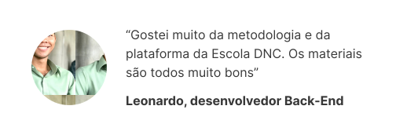
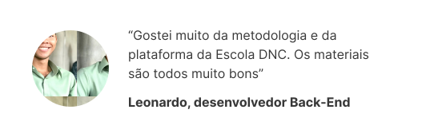
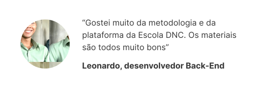

Mais de 23.000 pessoas viram a musica
 



Não é pecado mas é pesado Eu posso ser amado, mas sempre vou armado Pronto pra lutar, fazer o nome crescer, brilhar! Estou errado pareço otário Quase tudo que carrego é peso desnecessário Eu sei, eu sei Não é pecado mas é pesado. Já estou desanimado embora disfarçado eu me sinto humilhado Eu lhe confesso, amor, está pesado. Já estou desanimado mas sempre sou lembrado que tudo pode ser mudado quando confesso, amor: Está pesado. Sou brasileiro desses guerreiros Não largo o timoneiro No mar, eu sou ligeiro pronto pra lutar, fazer o nome crescer, brilhar! Não tem janeiro nem fevereiro A pedra que carrego fez-me um prisioneiro Eu sei, eu sei Não é pecado mas é pesado. É dia ensolarado depois do aguaceiro O mar levou meu barco aquele grande peso, amor, deixei de lado. É dia ensolarado futuro alvissareiro Mais leve, eu sou inteiro aquele grande peso, amor, deixei de lado. Leve eu vou cantando Leve eu vou Leve eu Leve
